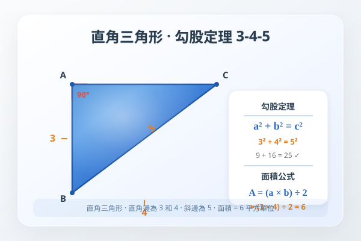
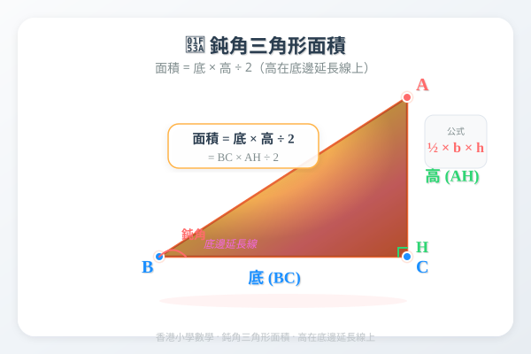
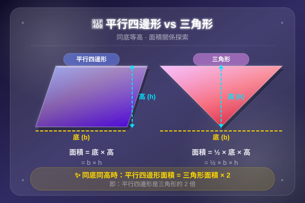
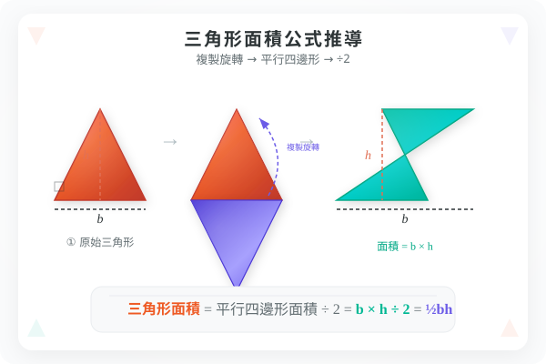

| # | 題目 | 答案 | 類型 |
|---|---|---|---|
| 1 | 計算長方形面積：長 8 cm，闊 5 cm。 | 40 cm² | auto |
| 2 | 計算正方形面積：邊長 6 cm。 | 36 cm² | auto |
| 3 | 在方格紙上，一點從 A 到 B，向右移 4 格、向上移 3 格。AB 之間的直線距離是斜邊還是垂直距離？ | ___ | manual |
| 4 | 一個平行四邊形，底边长 10 cm，但標示了一條斜邊長 6 cm。這條斜邊是不是高？為什麼？ | ___ | manual |
| 5 | 三角形有幾條底？每條底對應幾條高？（提示：任何一邊都可以當底） | ___ | manual |
| 例1 | 平行四邊形底 12 cm，高 5 cm。求面積。 | ___ | manual |
| 例2 | 平行四邊形底 8 m，高 3.5 m。求面積。 | ___ | manual |
| 例5 | 三角形底 15 cm，高 8 cm。求面積。 | 60 cm² | auto |
| 例6 | 三角形面積 36 cm²，底 9 cm。求高。 | ___ | manual |
| 例7 | 平行四邊形兩組對應的底和高分別是：底₁=10 cm、高₁=4 cm；底₂=5 cm。求高₂。 | ___ | manual |
| 例8 | 三角形面積 20 cm²，高 5 cm。求底。 | ___ | manual |
| 1 | 平行四邊形底 9 cm，高 6 cm。求面積。 | ___ | manual |
| 2 | 三角形底 10 cm，高 4 cm。求面積。 | 20 cm² | auto |
| 3 | 平行四邊形底 7 m，高 5 m。求面積。 | ___ | manual |
| 4 | 三角形底 12 cm，高 5 cm。求面積。 | 30 cm² | auto |
| 5 | 平行四邊形面積 72 cm²，底 8 cm。求高。 | ___ | manual |
| 6 | 三角形底 6 cm，高 8 cm。求面積。 | 24 cm² | auto |
| 7 | 平行四邊形底 15 m，高 4 m。求面積。 | ___ | manual |
| 8 | 三角形面積 40 cm²，底 10 cm。求高。 | ___ | manual |
| 9 | 平行四邊形面積 96 cm²，高 8 cm。求底。 | ___ | manual |
| 10 | 一個平行四邊形和一個三角形有相同的底（12 cm）和高（7 cm）。平行四邊形面積是三角形的多少倍？ | ___ | manual |
| 11 | 三角形面積 54 cm²，高 9 cm。求底。 | ___ | manual |
| 12 | 一個平行四邊形底 20 cm，面積是 160 cm²。求高。 | ___ | manual |
| 13 | 一個鈍角三角形，底 14 cm。從頂點到底邊延長線的垂直距離（高）是 6 cm。求三角形面積。 | ___ | manual |
| 14 | 平行四邊形兩組底和高：底1=10 cm、高1=6 cm；底2=8 cm、高2=？求高2。（提示：同一平行四邊形面積固定） | ___ | manual |
| 15 | hb₂b₁一個梯形可分成一個平行四邊形和一個三角形。平行四邊形底 8 cm、高 5 cm；三角形底 4 cm、高 5 cm。求整個梯形的面積。 | 20 cm² | auto |
| 16 | 兩個不同的三角形 A 和 B。A：底 10 cm、高 6 cm。B：底 15 cm、高 4 cm。比較 A 和 B 的面積，哪個大？大多少？ | 30 cm² | auto |
| 17 | 一個平行四邊形花圃，底 15 m，高 8 m。求花圃的面積。 | ___ | manual |
| 18 | 一塊三角形草地，底 20 m，高 12 m。每平方米種 3 棵花，草地共可種多少棵花？ | 120 cm² | auto |
| 19 | 平行四邊形地氈面積 6 m²，底 2.5 m。求高。 | ___ | manual |
| 20 | 三角形廣告牌面積 3 m²，高 1.5 m。求底長。 | ___ | manual |
| 21 | h₂=4底=10cmh₁=6下圖由一個長方形和一個三角形拼成。長方形長 10 cm、闊 6 cm；三角形底 10 cm、高 4 cm（與長方形共底）。求全圖面積 | 60 cm² | auto |
| 22 | 平行四邊形 A：底 12 cm、高 5 cm。三角形 B：底 10 cm、高 6 cm。哪個圖形面積較大？大多少？ | 30 cm² | auto |
| 🏔️1 | 6cm8cmh=5中線一個大三角形被一條中線分成兩個小三角形。兩個小三角形的底分別是 6 cm 和 8 cm，高都是 5 cm。(a) 兩個小三角形的面積各是多 | ___ | manual |
| 🏔️2 | ABCD底=15cm如圖，平行四邊形 ABCD，底 AB = 15 cm，高 = 8 cm。對角線 AC 把平行四邊形分成兩個三角形。(a) 平行四邊形 ABC | ___ | manual |
| 🏔️3 | 一個組合圖形由一個平行四邊形和一個三角形重疊而成。平行四邊形底 20 cm、高 10 cm；三角形底 12 cm、高 8 cm（三角形完全在平行四邊形內）。問： | 100 cm² | auto |
| H1 | 平行四邊形底 11 cm，高 7 cm。求面積。 | ___ | manual |
| H2 | 三角形底 8 cm，高 9 cm。求面積。 | 36 cm² | auto |
| H3 | 平行四邊形面積 84 cm²，底 12 cm。求高。 | ___ | manual |
| H4 | 三角形面積 30 cm²，底 6 cm。求高。（注意：先 ×2！） | ___ | manual |
| H5 | 平行四邊形地磚底 30 cm，高 20 cm。求地磚的面積。 | ___ | manual |
| H6 | 三角形旗幟底 60 cm，高 40 cm。求旗幟的面積。 | 1200 cm² | auto |
| H7 | 平行四邊形和三角形同底同高，底是 16 cm，高是 10 cm。(a) 分別求兩個圖形的面積。(b) 平行四邊形面積是三角形面積的幾倍？ | ___ | manual |
| H8 | 鈍角三角形，最長邊 25 cm。以最長邊為底，頂點到底邊延長線的垂直距離是 12 cm。求三角形面積。（提示：高在三角形外面，但公式不變！） | ___ | manual |
霖楓學苑 · LF Academy · 自動答案生成器 v1.0 · 手動題目請老師覆核